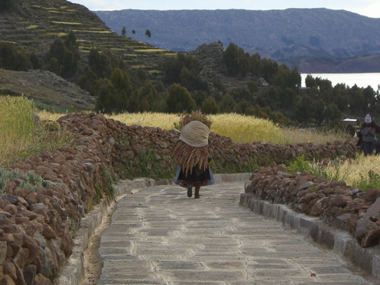

peru
puno
before heading out onto lake titicaca we spent a night in the port town of puno. peru's federal election was going on and there were quite a few people out and about. they obviously are passionate about their politics, the rally we saw in their small mall had what must have been pretty much the entire town.
near to puno are the uros floating islands whose resident's lives revolve around the totora reed. they make huts and boats from it, make clothes with it and even have used it to build the actual islands!.
 in fact not only can you build islands from it, you can even snack on it. (and to be honest, it wasn't too bad!)
in fact not only can you build islands from it, you can even snack on it. (and to be honest, it wasn't too bad!)
originally they moved out into the lake to avoid conflict with invaders; nowadays it's more to get the tourist dollars.
amantani
amantani is an island in lake titicaca with about 3500 people. they still live a very traditional life; speaking the old language of quechua (as well as spanish) and farming all day long. lots of awesome food such as quinoa. in fact this area of peru is widely regarded as the birthplace of potato domestication.
we stayed a night on amantani with our host parents paola and demetrio who cooked up meals, dressed us up and gave us a place to sleep.
though we couldn't talk much with paola and demetrio, our spanish being as good as their english, they did manage to teach us some dances.
we also got to play some soccer against the locals. however at 3900m we had no chance, i was exhausted after just warming up. the locals whipped us, and it was a high stakes game too ($1US per person)
tequile
not too far from amantani is tequile, another small island famous for it's men who knit lots of bright coloured hats!
the walk descending from the top of tequile is quite spectacular (like most of peru). note the boats at the wharf in the bottom corner. while i was struggling on the way down we saw a guy coming up with a 50kg bag of rice on his back. ouch. the lake itself is pretty big, it's hard to get a feel for the scale sometimes.
sillustani
not too far from lake titicaca are the ancient chullpas (burial towers) of sillustani. another example of pre-inca stone work. unfotunately they are mostly rubble; not because of poor workmanship but because they've been dynamited by tomb raiders looking for goodies.